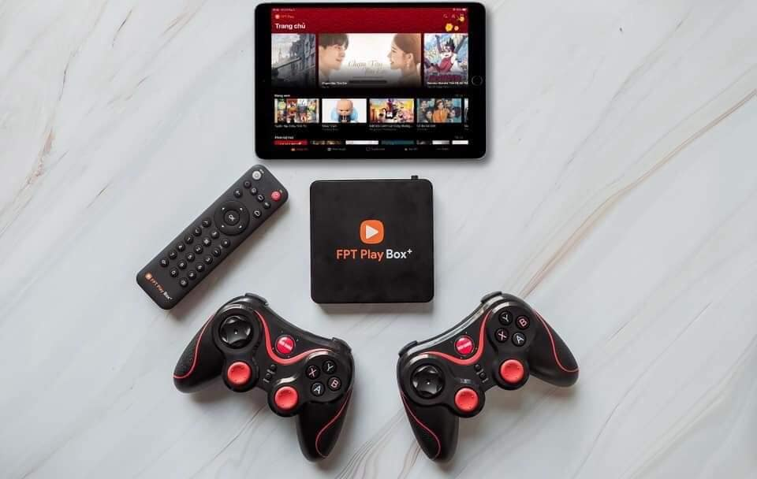

FPT Play Box
Hotline: 0963 555 722 để được tư vấn và lắp đặt miễn phí
Giá khuyến mại cực sốc: 1,590.000 VNĐ
FPT Play Box là gì?
- Fpt Play box là thiết bị giúp người dùng biến tivi thường thành smart tivi.
- Box Fpt play kết nối mạng internet wifi xem hơn 150 kênh truyền hình không mất cước hàng tháng.
- Ngoài ra, tivi box Fpt cũng là box duy nhất trên thị trường có thể xem bóng đá giải Seria-A, Ngoại Hạng Anh.
- Box có thể xem được phim 4K, truy cập mạng bằng trình duyệt web, đọc báo, lướt web bằng điều khiển giọng nói.
- Là thiết bị TV box đầu tiên trên thế giới chạy hệ điều hành Android TV 9, bản chính thức của Google.
Đánh giá FPT Play Box
Về việc đánh giá FPT Play Box, thông thường người dùng hay xem tại các trang đánh giá, review ở các diễn đàn công nghệ lớn như Voz, Tinhte, DienDangCongNgheVN …tuy nhiên để người dùng đánh giá một cách khách quan nhất, sau đây chúng tôi xin gửi đến người dùng các thông tin thực tế, về việc đánh giá sản phẩm FPT Play Box 2019 từ cấu hình phần cứng cứng cũng như nội dung các dịch vụ bên trong sản phẩm mang đậm tính công nghệ này.
Cấu hình Box FPT Play
Khách hàng lựa chọn các cấu hình như trên
Vậy điều gì khiến một sản phẩm có cấu hình phần cứng khiêm tốn như trên, lại được nhiều người tìm mua về sử dụng? Điều khác biệt nằm ở việc tối ưu trải nghiệm người dùng mà FPT làm được trên sản phẩm này. Như chúng ta đã biết, hệ điều hành android quá thành công trên các dòng điện thoại thông minh, chính vì vậy các tivi trên thị trường hiện tại, gần như 99% được thiết kế chạy trên nền tảng android TV không chính thức. Tuy nhiên, FPT làm một điều hoàn toàn ngược lại. Đó là việc dùng chính nguồn lực nhân sự, công nghệ phần mềm nổi tiếng của mình đến từ FPT Software cho ra một hệ điều hành dành cho tivi box thuần Việt. Năm 2019, FPT chính thức hợp tác chiến lược với Google và Gameloft, cho ra đời sản phẩm FPT Play Box+, chạy trên nền tảng hệ điều hành Android TV 9 (P). Trên bản mới này, người dùng được cài đặt cùng lúc hai hệ điều hành FPT Play và Android TV 9 để cùng lúc có thể tận dụng cả kho nội dung của Fpt và cả kho ứng dụng khổng lồ trên CH-Play.
Nếu đổi với các dòng tivi box sau một thời gian sử dụng, box sẽ hay bị đơ, thao tác chậm lý do chính là hệ điều hành mở không chính thức, người dùng cài quá nhiều các app có sẵn trên CH-Play và không biết cách don rác khiến cho box càng ngày dùng càng chậm. Với FPT Play OS + Android TV 9 thì hoàn toàn khác, trên box chạy hệ điều hành được FPT tối ưu dựa theo trải nghiệm người dùng từ chính dịch vụ truyền hình FPT đã quá thành công hiện tại, với các thuật toán ứng dụng trí tuệ nhân tạo AI tối đa hóa việc xử lý dữ liệu, sau mỗi lần tắt bật box sẽ tự động don rác hệ thống, firmware được cập nhật liên tục một cách tự động để fix lỗi hệ thống. Điều này tạo ra một giao diện box đến với người dùng thao tác mượt mà, nhanh và gần như không hề có các lỗi thường gặp trên box android.
FPT Play Box Voice Remote
Vào cuối năm 2018, tại triển lãm công nghệ diễn ra tại Hà Nội. FPT Telecom chính thức giới thiệu đến người dùng sản phẩm FPT Play Box Remote Voice. Đến tháng 3/2019, nắm được sự bất tiện cho người dùng phải dùng 2 điều khiển FPT (remote thường và remote giọng nói). Fpt cho ra mắt sản phẩm bản 2019 S400, tích hợp sẵn điều khiển giọng nói trên remote. Với sản phẩm này, chay Andoid TV 9, tích hợp sẵn trợ lý ảo Google Assistant người dùng có thể điều khiển tivi bằng giọng nói, điều mà từ trước tới này chưa một sản phẩm tivi box nào có thể làm được. Người dùng có thể chuyển kênh, tắt mở ứng dụng, tắt mở box, tìm kiếm mọi thông tin trên internet bằng giọng nói. Ví dụ: hỏi trực tiếp “thời tiết hôm nay như thế nào?” sẽ được đáp lại kết quả dự báo thời tiết tại địa phương mình ngay trên màn hình tivi. Bằng ứng dụng trí tuệ nhân tạo, box có thể nhân ra giọng nói của người dùng cả tiếng Anh lẫn tiếng Việt, thậm chí tiếng Việt còn hỗ trợ giọng nói của tất cả các vùng miền kể cả tiếng địa phương sau đó đưa ra lệnh chính xác điều khiển box.
FPT Play Box gói cơ bản(Không tốn phí hàng tháng)
Gói kênh miễn phí
FPT Play Box gói giải trí
Gói kênh Giải trí là gói có mất cước thuê bao hàng tháng, hiện tại người dùng mua mới FPT Play box sẽ được tặng gói cước này trong vòng 1 năm, sau khi hết 1 năm sẽ trở về gói miễn phí trên đây. Nếu người dùng tiếp tục đăng ký gói kênh giải trí, giá cước sẽ được tính như sau:
Bảng giá dành cho khách hàng được tính như sau:
- 30 ngày – 50.000đ.
- 60 ngày – 100.000đ.
- 120 ngày – 200.000đ.
- 360 ngày – 500.000đ.
Gói kênh Giải trí
FPT Play Box K+
Qua tuyệt vời cho những ai thích xem bóng đá khi FPT đã trang bị gói cước xem truyền hình K+ trên box của mình, giờ đây người dùng muốn xem K+ trên FPT Play box chỉ cần đăng ký là có thể xem ngay. Trong khi giá thêu bao K+ hòa mạng mới bên ngoài là 135.000đ/tháng thì đăng ký trên box của FPT chỉ 125.000đ/tháng. Cụ thể người dùng box FPT đăng ký thêm dịch vụ K+ có giá cước như sau:
- 1 tháng = 125.000đ
- 3 tháng = 375.000đ
- 4 tháng = 500.000đ.
- 6 tháng = 750.000đ.
Người dùng được thưởng thức trọn gói 4 kênh K+ HD là K+1 HD, K+PM HD, K+PC HD, K+NS HD.